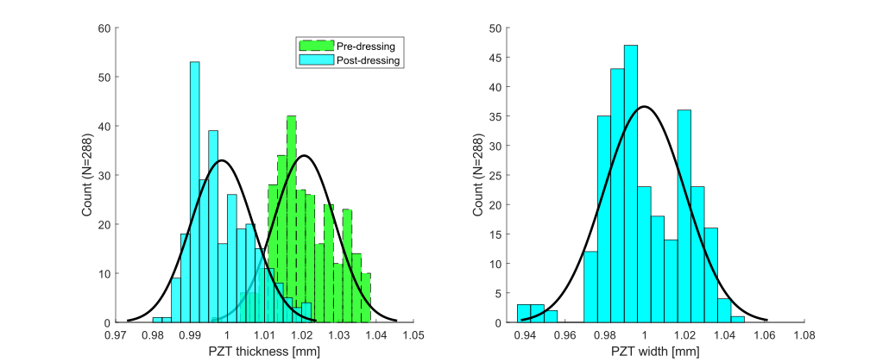

PZT Element Preparation
The PZT elements will each have slightly different widths and thicknesses, due to deviations from the nominal values given on the datasheet (tolerances provided by the manufacturer for these PZT elements were 130 for width and 25 for thickness, detailed in: Piezoelectric Element Tolerances - APC International.pdf). Also, some elements will have defects.
In this section, these characteristics are measured and recorded. This information is important for several reasons:
- Defect classifications will be used later to select which elements should be used for the transducer modules.
- The distribution of element widths and thicknesses is needed for calibrating the slot widths and depths in the matching layer deposition mould.
- If the unmatched and matched PZT element thicknesses are measured, these can be used to estimate the matching layer thicknesses (this data can be useful when interpretting inter-element variations in acoustic performance).
Manufacture and Load the PZT Element Tray
To store and keep track of the PZT elements, a gridded tray has been designed. This is accompanied by spreadsheet pzt-element-dimensions-defects.xlsx, where the data rows and columns correspond to the physical row and column locations on the PZT element tray. From now on, each PZT element should be identified by its row/column location e.g. 'A/3'.

Note: The default stl file is PZT Element Tray 16x17 10 mm length.stl, which is a 16 17 grid, supporting 272 PZT bars of dimensions 1 mm 1 mm 10 mm. To design a tray for more elements, or for elements with different dimensions, open the pzt-element-tray.f3d CAD file in Fusion 360 and edit the Nrows, Ncolumns, hole_diameter, pzt_element_length parameters in the Solid > Modify > Change Parameters menu.
-
Print the stl file with these settings:
- Low infill < 20% (non-structural)
- Coarse layer height 0.2 mm
- No support required
- Preview the part and make sure the holes are empty
-
Install the threaded inserts into the holes using a soldering iron set to 275C (adjust as necessary for non-PLA filaments),
- Manufacture a perspex lid with 4 mm clearance holes. If using the default stl file, the
PZT Element Tray Drawing.pdfdrawing can be printed out at 100% size to help mark out the hole pattern. - Label the rows with numbers and columns with letters using a permenant marker.
- Load the tray with PZT elements.
- Use M3 x 12 mm screws to secure the lid to the tray during storage (part ID XXX in
bill-of-materials.xlsx).
Dress the PZT Electrode Edges, Assess Defects
- During manufacture the individual PZT bars are cut from a large slab. Sometimes the silver electrodes are not cut neatly to the edge of the PZT.
- The excess PZT electrode material can fold over onto itself during shipping and handling.
- The excess electrode can affect the thickness measurement of the PZT elements and can prevent the PZT elements from seating properly on the bottom face of the slots in the PVA mould during matching layer deposition.
- To fix this, the electrode edges should be "dressed" by scraping away the excess electrode material.

Note: Perform this work underneath a microscope.
For each PZT element:
- Remove the PZT element from the tray using tweezers.
- Hold the PZT element on a flat clean surface with the electrode facing upwards.
- Use a scalpel blade (Swann-Morton No.11) to gently chamfer the edges of the electrodes. Do not apply excessive downwards pressure with the scalpel. Do not touch the face of the electrode with the scalpel.
placeholder for video

- Assess the PZT element for any defects. Possible defects are chipping (C), electrode delamination (E), sliced electrode (S), broken (B). Record these defects in spreadsheet
pzt-element-dimensions-defects.xlsx.
Note: This defect classification is not final, since some PZT elements will become damaged during manufacture.
Meaure the PZT Element Dimensions

- Setup a micrometer securely in a clamp on a workbench.
- Clean the micrometer anvils using a foam swab (part ID XXX in
bill-of-materials.xlsx) and isopropyl alcohol (part ID XXX inbill-of-materials.xlsx). - If using a digital micrometer, calibrate/tare it to 0.
- For each PZT element:
- Carefully handle the PZT element using tweezers (plastic to avoid electrode scratching)
- Clean the PZT element using a foam swab and isopropyl alcohol.
- Align the PZT element so that the electroded faces are parallel with the micrometer anvils.
- Turn the ratcheting (rear-most) micrometer screw until it clicks.
- Record the PZT element thickness
- Rotate the element so that the non-electroded faces are parallel with the micrometer anvils.
- Record the PZT element width
- Gently drop the PZT element into the correct location in the PZT element tray, being careful not to scrape the PZT element against the hole wall.
Note: Re-clean the micrometer anvils using a foam swab and isopropyl alcohol every 10 PZT elements.
placeholder for video
Example Data
Width and thickness distributions were measured from the pool of PZT elements (N = 288) used for this project, using the procedure detailed above. Excess electrode folding was found to produce a systematic error in thickness measurement. A mean decrease of 22 was measured before and after dressing the electrode edges. The difference in standard deviation was negligible after dressing. In this case, the mean values for thickness and width match the nominal value provided by the manufacturer.
| Dimension | Mean [] | Standard Deviation [] |
|---|---|---|
| Thickness (Pre-dressing) | 1021 | 8.2 |
| Thickness (Post-dressing) | 999 | 8.4 |
| Width | 1000 | 20.4 |
